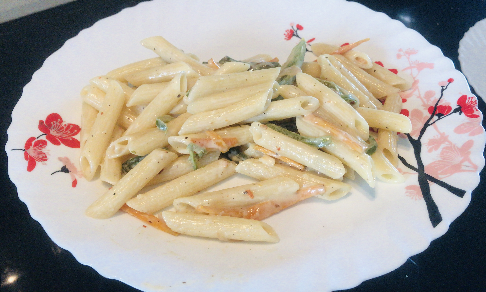

Recipe for Pasta

Ingredients
Sauce:
- Maida (1 to 1 and a half table spoon)
- Butter cubes ( 3 to 4)
- Garlic (2 cloves to 3 /4)
- 1 litre of milk
- 3 cheese cubes
Pasta:
- Penne( 4 cups pasta)
- Half a tea spoon olive oil
- a pinch of salt
Vegetables:
- Garlic 1 clove
- Brocolli
- capsicum
- zuchini
- Carrot
- Mushroom
- Beans
- Onion
Other ingredients
- Olive oil/butter 2tsp
- Salt and Pepper for taste
Method
Cook vegetables:
In a pan , add 2 spoons of olive oil, add garlic to it
Add the mushrooms and saute it till the water evaporates
Add brocolli and saute it half cooked
Add carrots and zucchini
Add capsicum
Add some salt and pepper
Cook Pasta
In boiling water add olive oil and some salt and add the pasta to it.
After it is cooked, drain the hot water and wash it under cold water.
Sauce:
Put one cube of butter, make sure its on low flame.
When the butter melts and becomes slightly thin, add garlic( simultaneously boil pasta , add olive oil and a pinch of salt to the water and then add pasta it needs to be fully soft pour the pasta into a strainer and place the strainer under cold running water )
Saute it for 10 secs and add maida
Saute it for 10 sec, and wait for it to turn alightly off white
Make sure there are no lumps and add milk to it stir continuously
Wait for it to get thicker and keep adding milk
till you get the desired consistency
Add cheese
Turn the flame to the lowest level
Add salt and pepper (smash pepper corn and add the contents )
Add oregano and chilli flakes if needed.